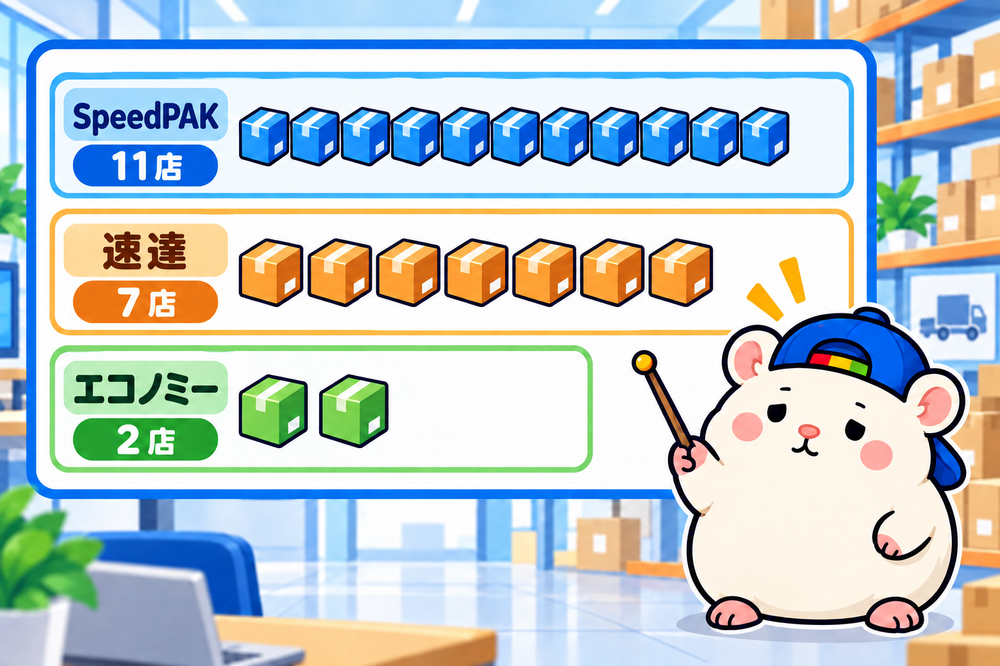
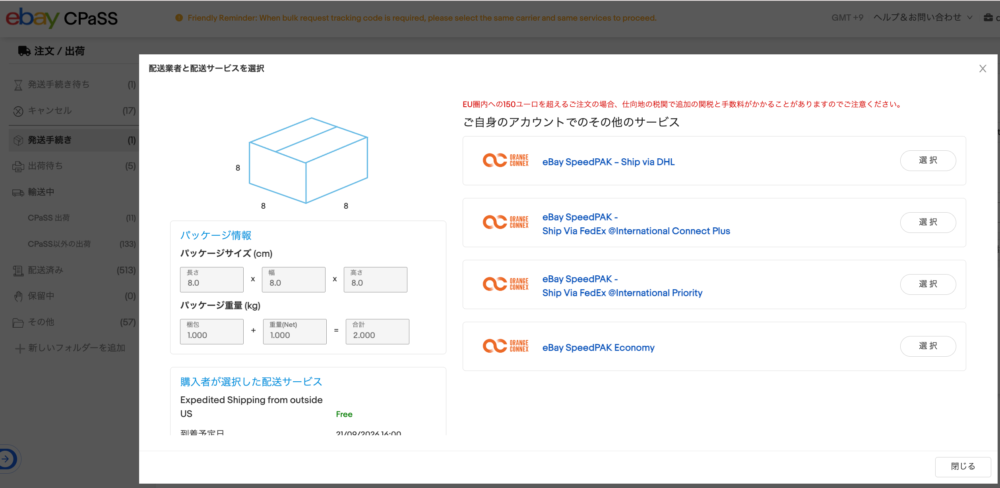

eBayジャパンが表彰した日本のセラー20店が、
何で配送をして、何日で発送しているのかを調べました。
アメリカ向けの配送でいちばん多かったのは、CPaSSで送るSpeedPAK。
20店のうち11店です。
発送までの日数は、1日の店と10日の店に、くっきり分かれました。
前回調べた、返品と配送除外国の続きです。
ぼくの店の発送は、入金から3営業日以内。
配送会社は、CPaSSという発送の画面で、荷物ごとに選んでいます。
上の店は、どの会社で、何日で送っているのか。
ずっと気になっていました。
調べ方: 出品の設定と、商品説明を読む
対象は、前回と同じ20店です。
1店につき1品ずつ、eBayのデータで2つを見ました。
・アメリカのお客さん向けの配送サービス
・発送日数(入金から発送までの日数)
あわせて、商品説明に書いてある配送会社も読みました。
発送日数が10日だった4店は、もう1品ずつ見ています。
配送方法: いちばん多いのはSpeedPAK

アメリカ向けの配送サービスは、こうでした。
| アメリカ向けの便(出品の設定名) | 店の数 |
|---|---|
| eBay SpeedPAK(CPaSS) | 11 |
| Expedited Shipping from outside US(速達・1〜4日) | 7 |
| Economy Shipping from outside US(エコノミー・11〜23日) | 2 |
※日数は、eBayが出しているお届けの目安(営業日)
SpeedPAKは、eBay公式の配送パートナー(Orange Connex社)の配送サービスです。
速達とエコノミーの2つは、配送会社が決まっていない便。
店がEMS・FedEx・DHL・日本郵便などから選んで送ります。
SpeedPAKの中では、Express(1〜3日)が3店、Expedited(1〜4日)が7店、Standard(5〜9日)が1店。
1〜4日で届くSpeedPAKの10店と速達の7店で、20店のうち17店が、アメリカに1〜4日で届く便を用意していました。
SpeedPAKで送る=CPaSSで送る

CPaSSは、eBayが作った「発送の管理画面」です。
売れた商品の送り状を作って、配送会社を選ぶところ。
ぼくの店のCPaSSで選べる便は、DHL経由、FedEx経由(2種類)、Economyの4つ。
ぜんぶSpeedPAKです。
CPaSSという言葉は、出品の設定には出てきません。
でも、SpeedPAKが見えれば、それはCPaSSです。
受賞20店のうち、少なくとも11店がCPaSSでした。
「少なくとも」なのは、出品の設定と、実際に使う便がちがうことがあるからです。
ぼくの店がそうです。
アメリカ向けの設定は速達(Expedited)ですが、実際はCPaSSでSpeedPAKを使っています。
配送会社: 郵便とクーリエを使い分けている
商品説明に配送会社を書いていたのは、20店のうち13店でした。
| 商品説明に書いてある配送会社 | 店の数 |
|---|---|
| FedEx | 10 |
| DHL | 10 |
| 日本郵便(EMS・エアメールなど) | 10 |
| UPS | 5 |
FedEx・DHL・UPSは、民間の国際宅配便(クーリエ)です。
EMSとエアメールは、日本郵便の国際便です。
おもしろかったのは、13店のうち8店が、郵便とクーリエの両方を書いていたこと。
たとえば、こんな使い分けです。
・ふだんは日本郵便。重さの制限などで、FedExかDHLになることもある(アニメグッズの店)
・エコノミーはエアメール、追跡つきの速達はFedEx・EMS・DHL(トレカの店)
重さ、大きさ、急ぐかどうか。
荷物ごとに、便を選び分けていました。
発送日数: 1日の店と10日の店
| 発送日数(営業日) | 店の数 |
|---|---|
| 1日 | 7 |
| 2日 | 1 |
| 3日 | 2 |
| 5日 | 3 |
| 6日 | 1 |
| 7日 | 2 |
| 10日 | 4 |
真ん中は4日です。
1日の7店は、ブランドバッグ(3店)、カメラ、ゲーム機、自動車パーツ、ブランドアクセサリー。
10日の4店は、トレカ、カメラ、オーディオ、腕時計とフィギュア。
もう1品ずつ見ると、3店は同じ10日、1店は5日でした。
同じカメラでも、1日の店と10日の店がありました。
10日のカメラの店は、商品説明に「実店舗やほかのサイトと、在庫を共有している」と書いていました。
売れた品は、全国のどこかの店舗にある。
そこから集める日数を、入れているのかもしれません。
ここは、ぼくの仮説です。
1日の店は、トップレートプラスの条件をそろえている
eBayには、「トップレートプラス」というマークがあります。
トップレートセラーの店が、次の2つをそろえた商品に付きます。
・発送が当日か、1営業日以内
・30日以上の返品を受けて、返送料が無料
マークは、検索結果と商品ページで目立つように出ます。
発送1日の7店のうち6店は、前回調べた返品も「30日以上・返送料セラー持ち」。
2つの条件をそろえていました。
上位の店は有在庫。ぼくの店は無在庫で3日以内に発送
ぼくの店は、発送3営業日です。
受賞20店の真ん中(4日)より、少し速い。
でも、1日の店には届きません。
ただ、そもそも売り方がちがいます。
受賞セラーは、在庫を手元に持って売る「有在庫」の店が多い。
受賞ページや商品説明に、在庫や実店舗のことを書いている店が7店。
全国に店舗を持つカメラの店、約8,000点の在庫を持つゴルフの店、東京に実店舗がある時計の店。
ほかにも、中古品を自分で検品して売る店が目立ちました。
1日で送るには、品が手元にあることが前提です。
ぼくの店は、ほとんどが無在庫。
売れてから仕入れて、品が届くのを待ってから送ります。
なので、1日で送るのはむずかしい。
返品は60日・返送料こちら持ちなので、返品の条件はそろっています。
商品の条件で足りないのは、発送日数だけ。
ただ、無在庫で雑多に出していくと、その中から「鉄板の商品」が出てきます。
よく売れて、利益もとれる商品です。
それを有在庫にして、利益の柱にする。
これが大事です。
ぼくも以前のeBayでは、主力の商品を有在庫にしていました。
いまの店も、9月から有在庫を少しずつはじめています。
まとめ: 上の店は、在庫を持って速く送る
・アメリカ向けの配送は、SpeedPAK(=CPaSS)が20店のうち11店でいちばん多い
・配送会社を書いていた13店のうち8店は、郵便とクーリエを使い分けている
・発送日数は1日が7店でいちばん多いが、10日の店も4店。真ん中は4日
・受賞セラーは在庫を持つ店が多い。1日で送るには、品が手元にあることが前提
・発送1日の店の多くは、トップレートプラスの条件もそろえている
・無在庫で見つけた鉄板の商品を、有在庫にして利益の柱にする
あなたの店の発送日数は、何日にしていますか?
一度、自分の出品を、お届け先アメリカにして開いてみてください。
そこに出る到着予定が、お客さんの見ている数字です。
▼中の人🏠(レンタルスペース23部屋・売上1.5億)のレンスペ実録
https://note.com/rentalspace_kiku
▼ブログ(eBay×レンスペ、全記事まとめ)
https://rental-space.net
▼この店のやり方は、ぜんぶ1冊にまとめてあります
リサーチ・出品・値付け・顧客対応まで、初月利益10万4,286円を出した実店舗の記録と手順を全部書いた教科書です。
読んだその日から、AI社員の作り方をそのまま真似できます。
『AI × eBay輸出の教科書 — 梱包以外、ぜんぶAI』
https://rental-space.net/kyokasho/ebay/
販売価格は3部売れるごとに2,000円ずつ値上がりします（上限あり）。内容・最新価格は販売ページをご確認ください。